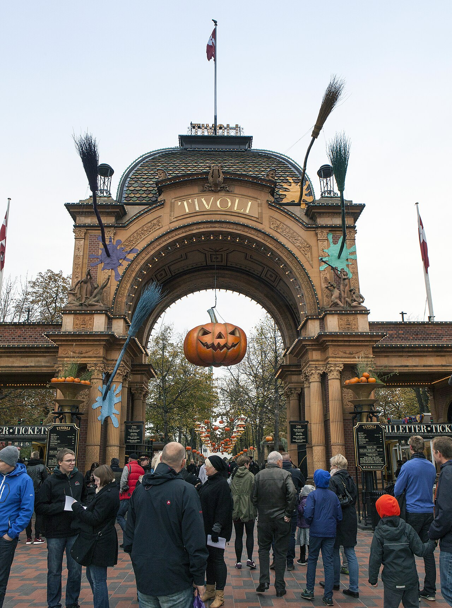
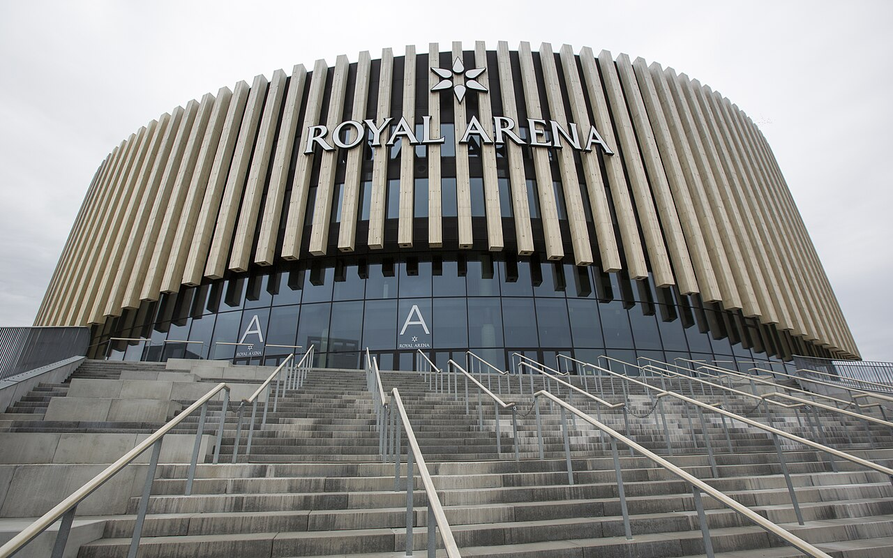

4 dienos, 4 keliautojai · Nyhavn, Amalienborgas, Christiania, Tivoli ir Deep Purple koncertas
Viskas pasiekiama pėsčiomis ir metro – automobilio nuomoti nereikia
Trumpa, kompaktiška kelionė į Kopenhagą rudens viduryje. Skrendame iš Kauno, apsistojame
Christianshavn rajono apartamentuose ir keturias dienas vaikštome po miesto centrą:
spalvotas Nyhavn namukas, sargybos keitimąsi Amalienborge, Rosenborgo pilį, Christianijos
laisvąjį miestą, Tivoli parką Helovino puošyboje ir kanalų ekskursiją. Trečios dienos
vakaras skirtas Deep Purple koncertui Royal Arena.
💡 Visos lankytinos vietos yra kompaktiškame centre ir pasiekiamos pėsčiomis arba metro – automobilio nuomoti nereikia.
💡 Paskutinę dieną nuo atvykimo į oro uostą iki skrydžio turėsite apie 2 val. 15 min. – neuždelskite išsiregistravimo iš apartamentų, kad liktų patogus laiko rezervas saugumo patikrai.
🗺️ Žemėlapis
1 diena 2 diena 3 diena 4 diena
1 diena – Atvykimas ir Kopenhagos klasika (2026-10-23)
🌤 23 spalio: dažniausiai sausa, 9–13°C, lietaus tikimybė 20%, vėjas iki 25 km/h (tipiška šio laikotarpio Kopenhagos vidurkė – tikslesnė prognozė pasirodys apie 2 savaites prieš kelionę).
09:40–10:15 · Kopenhagos oro uostas (CPH)
Nusileidus bagažo atsiėmimas ir pasas/muitinė nereikalingi (Šengeno erdvė). Į miestą važiuokite metro M2 linija – stotelė tiesiai terminale.
Palikite lagaminus – kambariai gali būti dar neparuošti prieš 15:00, bet daiktus priimti leidžiama iš anksto. Christianshavn metro stotelė – 3 min pėsčiomis.
Uždara prekyvietė su vietos gėrybėmis, sūriais, kava ir kepiniais – gera vieta užkandžiams ar dienos pabaigos kavai. Čia pat – ekologiškas dešrelių kioskas DØP (~6 €) pakeliui, ir vakarienė Christianshavns Færgecafé (~28 €/asm.) prie kanalo grįžus į Christianshavn.
Nuotrauka: Jorge Franganillo, CC BY 2.0 · šaltinis
🌤 24 spalio: kartais lyja, 9–13°C, lietaus tikimybė 40%, vėjas iki 31 km/h (tipiška šio laikotarpio Kopenhagos vidurkė – pasiimkite lietpaltį).
🚶 tas pats Christianshavn kvartalas nuo nakvynės vietos · ~1 min
09:15–10:15 · Laisvasis miestas Christiania
Alternatyvaus gyvenimo būdo kvartalas su gatvės menu ir dirbtuvėmis – geriausia lankytis ryte, kol rami atmosfera. Nuotraukas daryti tik ne Pusher Street – vietiniai to nemėgsta.
🍸 Netoliese Vesterbro rajone – Lidkoeb, trijų aukštų kokteilių baras buvusioje XIX a. vaistinėje, viršuje – viskio baras su plačia kolekcija. Žemėlapyje
🚶 1 km · ~2 min · trumpas atstumas centre
16:15–18:30 · Tivoli parkas (Helovino sezonas)
Spalio mėnesį parkas papuoštas tūkstančiais moliūgų ir apšviestas – gražiausia atmosfera temstant (~17:30–18:00). Viduje daug uždarų kavinių, jei atšąla ar palyja. Vakarienei pasiūlymas – Kanalhuset, kasdien kintantis namų virtuvės meniu prie kanalo (~20 €/asm.).

Nuotrauka: Johan Wessman / News Oresund, CC BY 2.0 · šaltinis
Rinkitės bet kurį iš daugybės maisto stalelių: Hallernes Smørrebrød (~18 €/asm., klasikinis rugbrėdas) arba Slagter Lund (~10 €/asm., frikadelės ir keptos kiaulienos sumuštiniai). Po pietų grįžkite pailsėti prieš koncertą, nes sutemsta jau apie 16:30.
🚶/🚇 8 km · ~13 min · asfaltuoti pagrindiniai miesto keliai link Ørestad
17:25–22:30 · Royal Arena – Deep Purple koncertas
Durys atsidaro 18:00. Važiuokite metro tiesiai iki Ørestad stotelės. Vakarienei prieš koncertą – Field's Food Lounge prekybos centre, kelios minutės nuo arenos (~15 €/asm.). Po koncerto grįžtant patariama eiti link Vestamager stotelės – ten paprastai mažiau žmonių nei prie Ørestad.

Nuotrauka: Jenny Andersson / News Oresund, CC BY 2.0 · šaltinis
Pasiimkite lagaminus ir atsiskaitykite su apartamentais. Iš čia iki oro uosto metro M2 linija (Christianshavn stotelė – 3 min pėsčiomis) trunka apie 20 min.
🚶/🚇 8 km · ~20 min · asfaltuoti miesto keliai (lygiagrečiai M2 metro linijai)
13:00–15:15 · Kopenhagos oro uostas (CPH)
Atvykus 13:00 liks pakankamai laiko bagažo registracijai ir saugumo patikrai prieš 15:15 skrydį. Paskutinė galimybė pasiimti kepinių iš Lagkagehuset oro uoste (~8 €/asm.). Metro stotelė yra tiesiai terminale.
Šiuo metu dar per toli iki kelionės tikslesnei prognozei, todėl žemiau – tipiška šio laikotarpio (spalio pabaigos) Kopenhagos oro statistika. Tikslesnė prognozė atsiras apie 2 savaites prieš kelionę.
Diena
Vieta
Oras
Temp.
Lietus
Vėjas
23-10
Kopenhaga
Dažniausiai sausa
9–13°C
20%
iki 25 km/h
24-10
Kopenhaga
Kartais lyja
9–13°C
40%
iki 31 km/h
25-10
Kopenhaga
Dažnai lyja
9–12°C
80%
iki 29 km/h
26-10
Kopenhaga → Kaunas
Kartais lyja
8–11°C
40%
iki 24 km/h
🎒 Ką pasiimti
Tik rankinis bagažas (~8–10 kg kiekvienam iš 4 keliautojų) — automobilio nėra, viskas nešiojama pėsčiomis/viešuoju transportu, todėl sąrašas sąmoningai kompaktiškas.
Skysčiai rankiniame bagaže – tik iki 100 ml talpyklose, visos sudėtos į vieną skaidrų 1 l maišelį.
Peiliai ir daugiafunkciai įrankiai į saloną negalimi – jų nereikės, nes automobilis nenuomojamas.
Danijoje naudojamas tas pats kištuko tipas (C) kaip Lietuvoje – adapteris nereikalingas.
Rengtis sluoksniais: lietus tikimas kone kas dieną (iki 80% spalio 25 d.), o temperatūra svyruoja 8–13°C.
Daugumą atsiskaitymų Danijoje galima atlikti kontaktine kortele – grynųjų DKK reikia minimaliai.
Supakuota:
Dokumentai ir pinigai
Drabužiai
Avalynė
Lietaus ir oro apsauga
Higiena (rankinio bagažo skysčiai)
Praktiški daiktai
💰 Biudžeto suvestinė
Sąmata visai 4 žmonių grupei, be automobilio nuomos.
Kategorija
Min (€)
Tikėtina (€)
Max (€)
✈️ Skrydžiai KUN↔CPH
416
536
620
🏠 Nakvynė (3 naktys)
350
436
520
🍽️ Maistas (4 dienos)
560
760
920
🎟️ Deep Purple koncertas
268
300
348
🎟️ Kiti įėjimo bilietai
180
240
320
Iš viso (4 žm.)
1 774
2 272
2 728
Vienam asmeniui
444
568
682
💡 Skrydžiai: Ryanair KUN→CPH 09:10–09:40 (10-23) ir CPH→KUN 15:15–17:45 (10-26), 416 € už visus 4 keleivius – kaina be registruoto bagažo, verta pridėti buferį bagažui.
💡 Deep Purple bilietus verta pirkti kuo greičiau – perpardavimo platformose kainos gali būti kelis kartus didesnės už oficialią (67–87 €/asm.).
💡 Rosenborgo pilies, Tivoli, kanalų ekskursijos ir Glyptotek bilietų kainos (~15–26 €/asm.) yra orientacinės rinkos kainos – patikrinkite prieš kelionę.
🍴 Kur pavalgyti
1 diena
Ida Davidsen — šalia Amalienborgo pilies · garsus smėrrebrėdo restoranas · ~30 €/asm.
Įkurta 1888 m., garsiausia smėrrebrėdo vieta Kopenhagoje – verta paklausti dienos pasiūlymo.
📍 Žemėlapyje
DØP (Den Økologiske Pølsemand) — šalia Nyhavn/kelio į Rosenborgą · ekologiškas dešrelių kioskas · ~6 €/asm.
Klasikinis danų gatvės maisto kioskas – greitas ir pigus užkandis tarp lankomų objektų.
📍 Žemėlapyje
Christianshavns Færgecafé — šalia apartamentų, Christianshavn · tradicinė smėrrebrėdo užeiga · ~28 €/asm.
Veikianti daugiau nei 150 metų, jauki vieta su vaizdu į kanalą, vos kelios minutės nuo nakvynės.
📍 Žemėlapyje
2 diena
Slotskælderen hos Gitte Kik — šalia Ny Carlsberg Glyptotek · šeimyninis smėrrebrėdo restoranėlis · ~25 €/asm.
Populiarus tarp vietinių iš netoliese esančio parlamento – tikra, nepagražinta danų virtuvė.
📍 Žemėlapyje
Morgenstedet — Christianijoje · vegetariška Christianijos virtuvė · ~12 €/asm.
Daugiau nei 20 metų veikianti bendruomenės virtuvė – viena pigiausių ir savičiausių vietų pietums.
📍 Žemėlapyje
Kanalhuset — šalia apartamentų, Christianshavn · bendra vakarienė namų virtuvėje · ~20 €/asm.
Kasdien kintantis meniu prie kanalo – jauki alternatyva antram vakarui.
📍 Žemėlapyje
3 diena
Hallernes Smørrebrød — Torvehallerne · smėrrebrėdo prekystalis · ~18 €/asm.
Seniausias ir žinomiausias smėrrebrėdo prekystalis turguje, 15–20 rūšių ant tikro rugbrėdo.
📍 Žemėlapyje
Slagter Lund — Torvehallerne · mėsinės frikadelių prekystalis · ~10 €/asm.
Prie šio prekystalio nuolat rikiuojasi eilė dėl keptos kiaulienos sumuštinių ir frikadelių.
📍 Žemėlapyje
Field's Food Lounge — netoli Royal Arena / Ørestad stotelės · prekybos centro valgykla · ~15 €/asm.
Praktiškas pasirinkimas greitai vakarienei prieš koncertą, patogu prieš 18:00 atsidarančias duris.
📍 Žemėlapyje